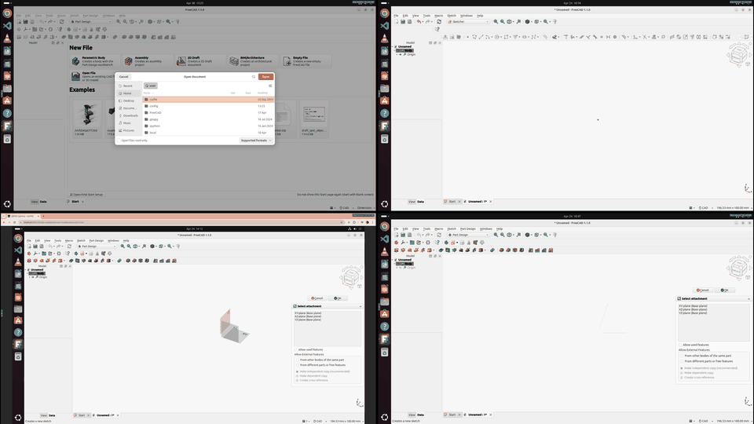
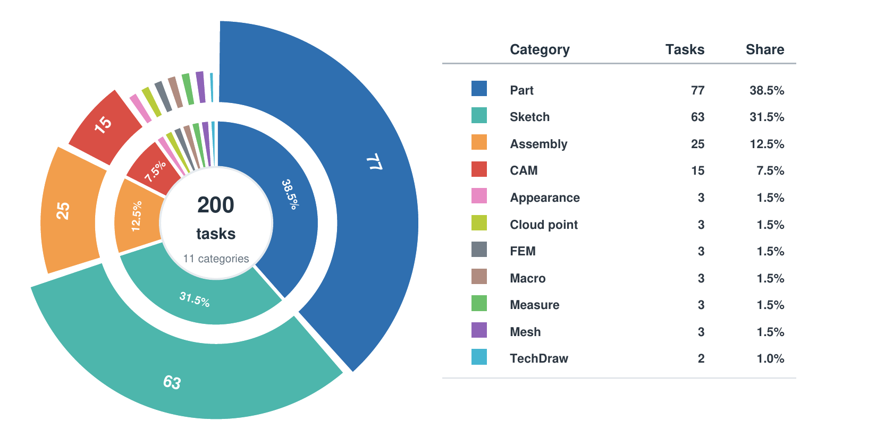
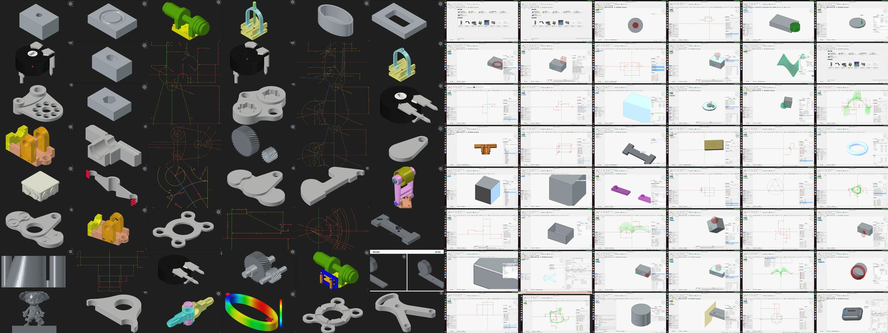
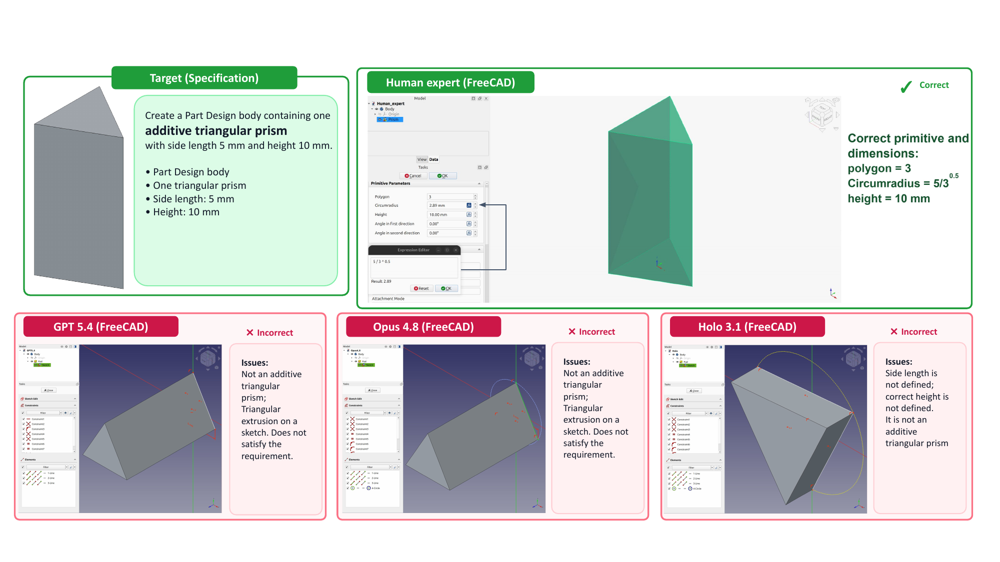

1Georgia Institute of Technology · 2North Carolina State University · 3National University of Singapore · 4Marquette University

CADWorld task traces spanning sketching, part modeling, assembly, CAM, FEM simulation, and technical documentation in FreeCAD.
Computer-use agents (CUA) are increasingly evaluated in realistic desktop and web environments, yet existing benchmarks largely measure navigation, form filling, information retrieval, and document manipulation. Mechanical computer-aided design (CAD) remains underexplored, even though it is a quintessential GUI-based professional task: success requires spatial grounding, exact dimensions and constraints, long-horizon interaction, and saved artifacts that remain valid under downstream checks.
We introduce CADWorld, a GUI-based environment and benchmark for evaluating whether general-purpose computer-use agents can complete realistic mechanical CAD workflows through screenshots and executable UI. CADWorld contains 200 tasks spanning 11 mechanical workflow categories — sketching, part modeling, assembly, computer-aided manufacturing (CAM), finite element method (FEM) simulation, material appearance, point-cloud conversion, macros, measurement, mesh conversion, and technical drawings. Each task is scored by execution-based artifact checks over saved FreeCAD files and auxiliary outputs.
On a 60-task coverage evaluation across all 11 categories, the strongest evaluated agent reaches 25.0% success versus an 87.0% human expert reference pass, with failures concentrated in long multi-object workflows and downstream engineering outputs. CADWorld exposes a substantial gap between current CUA and reliable, measurable professional mechanical design workflow.
A single CAD task can involve repeated tool selection, parameter entry, geometry editing, and visual verification.
Infer 3D shape and geometric intent from 2D screenshots — coincidence, tangency, parallelism, profile closure, assembly motion, stock-to-target removal.
Small click or drag errors can select the wrong entity or change a dimension, constraint, or solver output — causing failure even when the result looks close.
Realistic workflows require dozens to hundreds of coordinated actions, with repeated mode switches and state-dependent recovery.
The final file must stay traceable, measurable, diagnosable, and editable in the same CAD workflow a mechanical engineer uses — not just a plausible screenshot.
Tasks are organized by CAD capability rather than by a single FreeCAD workbench, since real workflows combine several concepts at once.


Target geometries (left) and FreeCAD trajectory screenshots (right) across CADWorld's sketch, part, assembly, CAM, FEM, appearance, and documentation tasks.
Seven agents evaluated on a budget-controlled 60-task subset covering all 11 categories, capped at 100 GUI steps per task.
| Model | Success ↑ | Finish ↑ | Avg. Steps ↓ | Avg. Output (K) ↓ | Avg. Cost ($) ↓ |
|---|---|---|---|---|---|
| Human Expert | 87.0% | 100% | 26.5 | — | — |
| GPT5.4 (CUA) | 25.0% | 71.7% | 87.6 | 20.1 | 1.40 |
| Opus4.8 (CUA) | 23.3% | 55.0% | 64.5 | 21.7 | 10.00 |
| Kimi K2.6 | 15.0% | 38.3% | 84.6 | 10.0 | 0.60 |
| Holo 3.1 | 1.7% | 31.7% | 79.5 | 13.4 | N/A |
| OpenCUA | 0.0% | 8.3% | 89.0 | 8.9 | N/A |
| MiniMax M3 | 0.0% | 6.7% | 97.6 | 7.9 | 0.20 |
| Qwen3.6 | 0.0% | 5.0% | 97.0 | 9.4 | N/A |
Human success is a single-trial expert reference pass, not a population study. Finish is the share of runs with no normalized error recorded. Full token/cost breakdown by finished vs. successful runs is in the paper.
| Model | Overall | Sketch | Part | Assembly | Mfg. / Sim. | CAD Utilities |
|---|---|---|---|---|---|---|
| GPT5.4 (CUA) | 25.0% | 16.7% | 33.5% | 0.0% | 0.0% | 45.5% |
| Opus4.8 (CUA) | 23.3% | 16.7% | 28.6% | 0.0% | 0.0% | 45.5% |
| Kimi K2.6 | 15.0% | 5.6% | 19.1% | 0.0% | 0.0% | 36.4% |
| Holo 3.1 | 1.7% | 0.0% | 4.8% | 0.0% | 0.0% | 0.0% |
| OpenCUA | 0.0% | 0.0% | 0.0% | 0.0% | 0.0% | 0.0% |
| MiniMax M3 | 0.0% | 0.0% | 0.0% | 0.0% | 0.0% | 0.0% |
| Qwen3.6 | 0.0% | 0.0% | 0.0% | 0.0% | 0.0% | 0.0% |
| Human Expert | 87.0% | 88.9% | 88.3% | 84.0% | 77.8% | 88.2% |
No evaluated model solves an Assembly or Manufacturing/Simulation task in this coverage pass — long multi-object workflows and downstream engineering outputs remain the hardest groups.
Even a short, unambiguous task — one additive triangular prism with a specified side length and height — trips up every evaluated agent shown here.

The human expert produces the correct primitive and dimensions. GPT5.4, Opus4.8, and Holo 3.1 each build a plausible-looking but geometrically wrong shape — a triangular extrusion on a sketch, not an additive primitive, or missing the specified dimensions.
Across the benchmark, failures are rarely superficial. Agents select the wrong workbench, leave a sketch underconstrained, enter a dimension in the wrong field, build visually similar but semantically wrong geometry, modify a supplied stock object, omit CAM path generation, or save the result to the wrong path. Because the saved artifact is the product in CAD workflows, CADWorld's all-checks-pass evaluator makes these small semantic errors visible where a purely visual judgment would miss them.
@misc{dong2026cadworld,
title = {{CADWorld}: Benchmarking Computer-Use Agent for Spatial, Precise, and Long-Horizon Computer-Aided Design},
author = {Dong, Zihan and Liu, Yuanzhe and Ma, Zhiyuan and Li, Kaixin and Zhan, Qishi},
year = {2026},
note = {Manuscript},
url = {https://cad-world.github.io/},
}